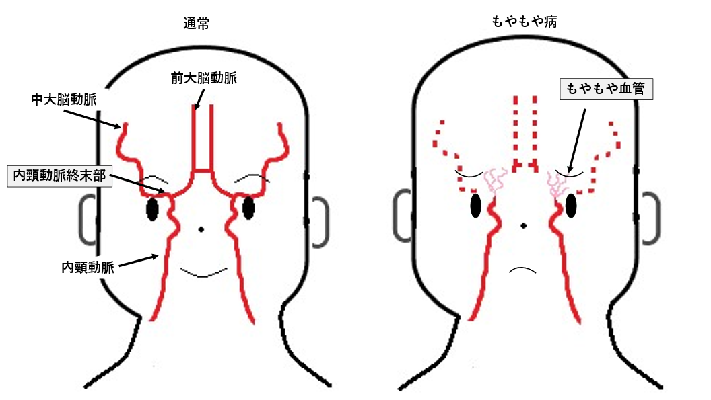

脳神経外科【脳卒中センター】
Neurosurgery脳梗塞
症状
顔が歪む
片方の腕に力が入らない
言葉がうまくしゃべれない
治療
血栓溶解療法
血栓溶解療法とは、rt-PAという薬を注射して、詰まった血の塊（血栓）を溶かして血液が流れるようにします。世界各国で行われていますが、日本では、2005年10月から脳卒中の専門病院の一部でできるようになりました。この治療を受けられた方の3〜4割は自らの足で歩いて退院し、社会復帰を果たすこともできるようになっています。ただし、この治療を受けるためにはいくつかの条件があります。その中で最も大切なものに【時間の制約】といわれているものがあります。
時間の制約とは
rt-PA治療は、脳梗塞の発症後4.5時間以内にしか行えないことになっています。それは、脳梗塞が発症して4.5時間以上経つと脳の血管がもろくなり、治療を受けることにより、脳出血の危険性が高まり、かえって病状を悪化させる可能性があるからです。病院に到着した後、私たち医師は、診察や各種の検査をして病気を診断します。その中でrt-PA療法が有効である可能性があり、かつ安全に投与できるかどうかの判断をします。そのためには、病院に患者さんが到着してから最低でも約1時間が必要です。その1時間を差し引くと、脳梗塞を発症してから3.5時間以内に脳卒中の専門病院へ到着することができないとrt-PA治療を受けることができないことになります。このことが、その後の運命を分けることになります。これが最も大きな制約、時間の制約と呼ばれているものです。
脳卒中スクランブル体制
脳卒中になっても、後遺症を最小限にするために知っておいていただきたいことは、脳梗塞に対するrt-PA治療以外にも、脳卒中専門病院では血管内治療（血管の中からの治療）や外科手術によって脳卒中を良くすることができる可能性があります。いずれにしても、脳卒中になった時に、後遺症を最小限にするためには、できるだけ早く専門病院に到着することが大切です。「rt-PAガイドライン」では、患者さんが病院に搬送されてから1時間以内のrt-PA投与が推奨されていますが、当院では搬送されてから30分以内の治療開始を目標に掲げた【脳卒中スクランブル体制】を整えています。
脳梗塞に対する血管内治療
血管内治療は、rt-PAが無効もしくは適応外の患者さんに活用できることから、死亡リスクの高い脳梗塞患者を救える治療法として期待されています。カテーテルという細い管を足の血管から挿入して、頭の中の脳血管へ進め、血管を塞いでいる血栓を網目状のデバイスに絡めつつ回収し、閉塞した脳血管を再開通させます。 この治療は血管を傷つけてしまうリスクが常に伴い、特別な技術が必要となります。その技術を担保するのが「脳神経血管内治療専門医」です。当院には6名の脳神経血管内治療専門医が在籍し、脳神経血管内治療研修施設となっています。
くも膜下出血
症状
激しい頭痛
意識障害
嘔吐
治療
主に脳動脈瘤の破裂により発症する「くも膜下出血」では、最初の出血で約半分の方が死亡し、再出血や脳血管攣縮によりさらに残りの半分の方が亡くなります。救命できても後遺症を残すことが多く、完全に治癒する確率は２割程度とされています。
ただし、当初重篤であっても積極的な治療により完全に復帰することもあり、効果的な外科治療選択が重要です。種々の臨床研究で示された結果に基づき、当科では破裂脳動脈瘤の再出血予防の外科治療の第一選択として脳血管内手術を行っています。症例によっては従来の治療が優れているため、クリッピング手術を選択することもあります。
診療体制においては、緊急対応が重要ですが、当院脳卒中センターでは院内各所の緊密な連携により迅速な診断、治療を達成しております。当院脳神経外科では医師スタッフとして日本脳神経外科学会認定専門医7名、日本脳神経血管内治療学会認定指導医1名、専門医5名を擁しております。術者はいずれにおいても一定の技術レベルに達しており、柔軟かつ最善の治療選択を行っております。
再出血予防の外科治療後は、全例で卒中ケアユニット入室による綿密な全身管理を継続します。続発する疾患として脳血管攣縮、水頭症が重要ですが、ベッドサイドでの経頭蓋エコーモニタリング、脳血管攣縮時の脳血管内治療による介入、脳室ドレナージなど幅広い対応を行っております。重篤かつ予後不良な疾患ではありますが、積極的な全般的治療により総じて良好な治療成績を達成しております。
脳出血
症状
めまい、頭痛、吐き気
手足の運動障害
感覚が鈍る
意識障害
治療
脳出血による症状は出血部位によって手足の麻痺やしびれ、意識障害など様々です。症状の強さも出血の部位、大きさにより異なります。
一般的には安静にして血圧をしっかり下げる、といった内科的な治療が中心です。しかし、血腫が大きくなると正常な脳を強く圧迫する事から、脳ヘルニアという命に関わる緊急の状態となります。ある一定以上の大型の脳内血種がある場合、意識状態などの神経症状が極めて悪い場合、命を救う目的で緊急で外科的な治療（血腫除去手術）が必要となる事があります。脳卒中ガイドラインに基づき、血腫の大きさ、部位、年齢、神経所見、全身状態などを考慮して決定しております。
他方、近年の内視鏡を用いた医療の進歩は目覚ましいです。脳神経外科の領域でも、手術や機器が飛躍的に発展・普及してきています。これに伴い、脳出血に対する、より低侵襲かつ安全な治療方法としての神経内視鏡手術が、広く行われる事が可能となってきました。開頭手術、神経内視鏡手術のいずれも行う事ができる当科においては、対応可能な場合は、より低侵襲な神経内視鏡手術を現在積極的に行っています。
脳梗塞を主とする虚血性疾患が増加する中、脳出血に代表される出血性疾患は減少傾向にはありますが、一度発症すると非常に予後の悪い疾患です。当科では、外科的治療はもちろんのこと、内科的治療も含め総合的に治療を行っております。
脳梗塞を主とする虚血性疾患が増加する中、脳出血に代表される出血性疾患は減少傾向にはありますが、一度発症すると非常に予後の悪い疾患です。当科では、外科的治療はもちろんのこと、内科的治療も含め総合的に治療を行っております。
脳動脈瘤
症状
目の上や目の奥の痛み
顔の知覚低下や麻痺
瞳孔散大
視野異常
治療
小径未破裂脳動脈瘤に対する内科的治療法
近年ではMRIの普及とともに、小径の未破裂脳動脈瘤が偶然発見されることが増えてきています。部位とサイズ、年齢、ご希望などを総合的に判断して治療適応を決定しますが、破裂予防に関して外科治療に匹敵するような内科治療はないのが現状です。ひとつ効果が期待されているのが脳血管に対する保護作用を有するとされるスタチンであり、外科治療が行われなかった未破裂脳動脈瘤において、破裂や増大を予防することができるかどうかの検証を行う研究に参加しています。
治療困難な脳動脈瘤に対する新しい治療方法
25mmを超すような巨大脳動脈瘤や部分血栓化脳動脈瘤は現在でも治療が困難とされています。我々は各種テクニックの集約によりこれらの難治性動脈瘤にも積極的な治療を行い、良好な成績を報告しております。
さらに当院では、新規脳血管内治療デバイスの検証も行なっています。脳動脈瘤治療の領域では新型コイル、動脈瘤アシストステント、慢性脳虚血治療の領域では新型頚動脈ステント、頭蓋内動脈専用ステント、急性期脳虚血の領域では新しい血栓回収器具など、さまざまな分野で日々新しいデバイスが登場しています。本邦にて承認された新規デバイスはいち早く当院に導入・評価しています。当院を含む全国の大規模施設・関連大学との共同研究はもちろんのこと、当科が中心となってデバイスの有効性の検証、前向き登録試験なども行っております。
頚動脈狭窄症
症状
脳梗塞の原因となる
治療
食生活の欧米化や動脈硬化性リスク因子の増加などにより、頚動脈狭窄症の患者さんが飛躍的に増加しております。当院は頚動脈狭窄症の治療を本邦で最も多く扱う施設の一つであり、現在までに、頚動脈プラーク性状に基づく治療方針決定、薬剤によるプラーク安定化などの研究を行ってきました。
近年では、頚動脈狭窄症における長期転帰に関する研究なども高い評価を受けております。
その他にも、今なお治療困難な急性脳主幹動脈閉塞の病態および形態に基づいた脳血管内治療方法の検討、抗血栓療法内服中の脳出血症例での凝固因子投与の効果、穿刺部合併症の危険因子など多くの研究を行っており、学会発表や論文において高い評価を受けています。
もやもや病
概念
もやもや病とは脳の血管が通常の血管と異なり、文字通り「もやもや」とした血管に見えることから名づけられた病気です。内頚動脈という脳に栄養を送る太い血管の突き当り部分が細くなり、脳の血流が足りなくなることで症状が出現します。この血流不足を補うために太い血管から枝分かれした細い血管が拡張・新生することで通常みられないもやもや血管が出現します。この血管は脆く部位によっては出血しやすいことがわかっています。
症状
激しい頭痛
意識障害
手足の麻痺
言語障害
失神
脱力発作
けいれん
めまい
手足のしびれ
性格の変化
◯脳血流が不足して発症する場合
脳の足りない血流を補っているもやもや血管はとても細い血管であるため、血流不足を起こしやすくなります。典型的な症状は一過性脳虚血発作と呼ばれ、泣く、運動、熱い食べ物に息を吹きかけて冷ますなどの行動で手足の力が入りにくくなる、言葉が出にくくなるなどの症状が一時的に出現することがあります。これが進行した場合は脳梗塞となり麻痺症状・言語症状などで症状が残存することがあります。
◯脳の異常血管が破綻する場合
もやもや血管は通常の血管と異なりとても弱い血管であるため、出血し易いことがわかっています。出血した場合、出血の場所により症状が異なりますが、激しい頭痛・嘔吐や麻痺、場合によっては命の危険性が出現することもあります。
特徴
もやもや病が発症する年齢は2つのピークがあり、小学生（6-8歳前後）と成人後（40歳代）に多いとされています。こどもの頃はその大半が血液が足りなくなる（虚血）ことで症状を起こします。成人で発症する場合は出血と虚血が半々です。必ずしも遺伝する病気ではないですが、その近親者に同じ病気を持つ方が多いとされています。小児・壮年期に多く発生し、その後も進行することがある病のため、就学・就労・出産など人生の様々な場面に関わることが多い病です。
治療
内科的治療と外科的治療があります。
◯内科的治療
脳の血流不足で発症した場合に細くなった血管の閉塞を予防するために抗血小板薬という血を固まりにくくする薬を内服することがあります。しかし、薬には細くなった血管を拡げる作用はありません。
◯外科的治療
内科的治療には限界があるため手術が必要となる場合があります。血流不足の場合は足りない血液を他の血管から補う手術を行います。多くは皮膚の血管を脳の血管とつなぎバイパスと呼ばれる別の血液が流れるルートを作ることで血流不足を改善させます。出血した場合についても、出血が落ち着いたあとに同様のバイパス手術を行います。手術により血流不足を補うことで異常に発達した弱いもやもや血管への負担を減らす効果があります。
専門外来
「もやもや病支援外来」
もやもや病は、小児期、青壮年期に発症し、障害を残す可能性のある疾患です。そのため、疾患に対する治療のみでなく、その後の人生における就学や就労などに対するさまざまな支援が必要となります。もやもや病の第一人者としてこの疾患に対する治療、研究を長年牽引し、患者さんへのトータルサポートを目的として全国で初めて ”もやもや病支援センター“ を開設された、京都大学医学部付属病院 もやもや病支援センター長 宮本享先生による ”もやもや病支援外来”を開設しました。
外来日：2024年10月25日金曜日
2025年1月31日金曜日
外来受診に関するお問い合わせは「医療支援総合サービスセンター」まで
問い合わせ
２階７番窓口「医療支援総合サービスセンター」
●月曜日～金曜日 13:00〜17:00
 093-511-2000（代表）
093-511-2000（代表）